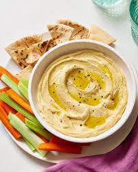

Hummus

Description:
A delicious middle-eastern dip made with chickpeas, tahini and other seasonings.
Ingredients
- 1 can (15 ounces/425g) chickpeas, drained and rinsed
- 1/4 cup (60ml) fresh lemon juice (about 1 large lemon)
- 1/4 cup (60ml) tahini (sesame seed paste)
- 1 clove of garlic, minced
- 2 tablespoons extra-virgin olive oil, plus more for drizzling
- 1/2 teaspoon ground cumin
- Salt, to taste
- Water (as needed for desired consistency)
- Paprika, for garnish (optional)
-
Chopped fresh parsley, for garnish (optional)
-
Warm pita bread or vegetable sticks, for serving
Instructions
- Place the drained and rinsed chickpeas in a food processor or blender.
- Add the fresh lemon juice, tahini, minced garlic, extra-virgin olive oil, ground cumin, and a pinch of salt to the food processor.
- Process the ingredients until smooth and creamy. If the mixture is too thick, you can add water, a tablespoon at a time, until you achieve the desired consistency. Continue blending until well combined and creamy.
- Taste the hummus and adjust the seasoning, adding more salt or lemon juice if needed.
- Transfer the hummus to a serving bowl or platter.
- If desired, create a well in the center of the hummus using the back of a spoon and drizzle some extra-virgin olive oil into the well. Sprinkle with paprika and chopped fresh parsley for garnish.
- Serve the hummus at room temperature with warm pita bread or vegetable sticks for dipping.